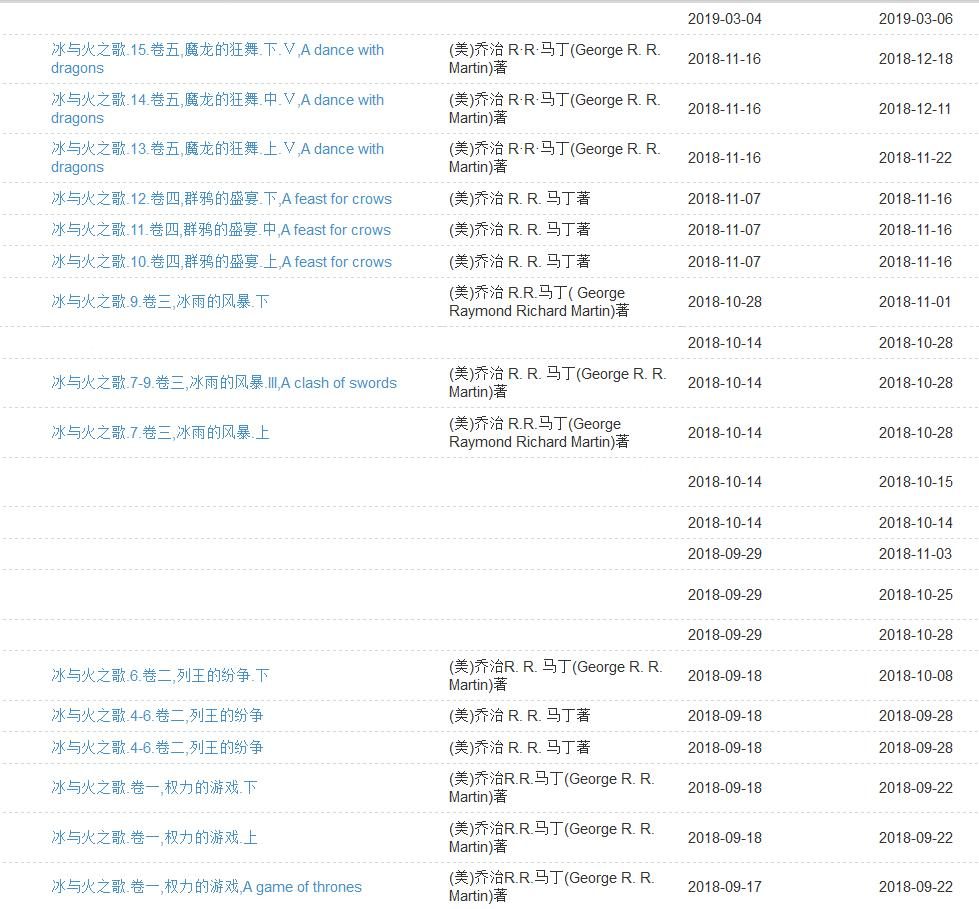

引子
明天，GOT第八季播完最后一集也就结束了，想开始播八季第一集的时间仿佛在昨天，但美剧就是这个尿性，一周一集，但确实是一个多月转眼过去。虽然质量一言难尽罢……
入坑
其实我早知道这剧，也有很多人推，但一直让我难以入坑的是剧照的中世纪服化道，所以想起那些《甄嬛传》《宫心计》，懂吧……
转折在高二到高三那个漫长的暑假，七月很短，期末在中旬，考完回家休息两天再写十天左右的作业最后收拾东西再滚去学校补课，八月开始二十天左右的自习，好在进入九月前还有七天的假。所以在家决心备战高考，就要好好利用这七天的小长假，最后七天刷完七季……
虽然但是，第一季刚真的很劝退，庞大的家族体系、复杂的人物关系以及看似毫不相关的剧情，甚至一度以为主角的奶德被砍……还好能坚持下来……
不过看到后来，熟悉了之后也就沉迷其中了……
进入高三，学业渐忙，关于GOT唯一的慰藉就是，偶尔碰到几个臭味相投志同道合朋友在课间、饭间聊聊GOT，就这样，很快的，高三也就结束了……
后续
再然后就是大一的上学期，我竟是没想到，军训后的大一竟然要上一年的早晚自习，我X，才刚过了三年早晚自习，本以为脱离苦海，没想到啊，但也身不由己。
人是去了，但却不安分，并且早晚自习期间手机上交……想来也是苦逼。
于是晚自习寂寞难耐，直到有一天去图书馆转转，偶然看到了《冰与火之歌》，一怒之下借来《冰与火之歌》第一卷全本，从此晚自习埋头苦读……

遗憾的是，那时候看得太急，很多细节都没有联系起来，而且后来电视剧和小说脱节，我也很难捋顺先后顺序了……
再见
天下没有不散的筵席，尽管现在很多人都说最后的这两集有些烂尾的感觉，毕竟它已经陪伴GOT迷们八九年的时光，天下没有真正的完美。不管怎么说，感谢GOT陪伴我度过那些无聊的时光，以及，想念那些跟我臭味相投的同学们……